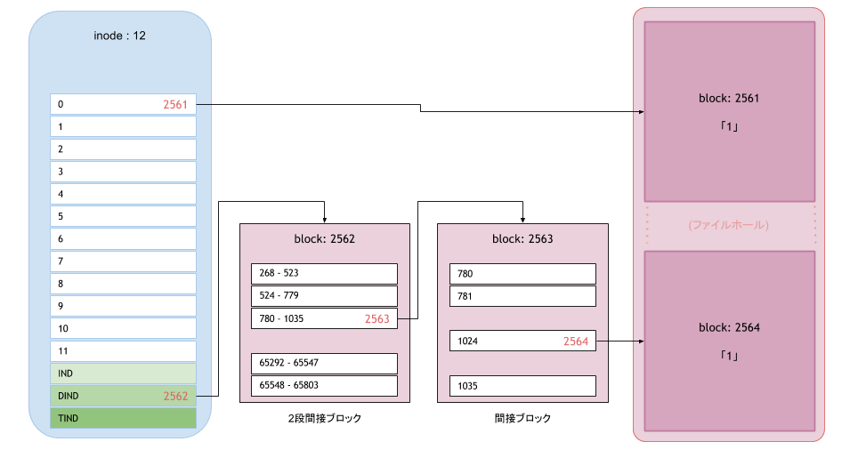

最近かなり流行っている「Linux プログラミングインタフェース」を読んでたら、lseek(2) の解説で Sparse File (スパースファイル) の話が出てきたので、実装が気になって調べてみた。
ファイル末尾を越えた位置へシークするとどうなるでしょうか? そしてその位置で I/O を実行すると? … (略) 意外 に思われるかもしれませんが、書き込みは可能なのです。
refs: https://www.oreilly.co.jp/books/9784873115856/
Sparse File とは
簡単に言うと、内部に NULL のかたまり(ファイルホール)を含むファイルのこと。こんなやつ。
1 2
| 4.0K -rw-r--r-- 1 root root 1.1M 3月 24 01:30 2016 sparse_file
|
ls で s オプションをつけると実際に使用しているブロックサイズが表示される。ファイルサイズ見ると 1M以上あるが、実際は 4K しか使用していない。
1 2 3 4 5
| # od -tx1 sparse-file 0000000 31 00 00 00 00 00 00 00 00 00 00 00 00 00 00 00 <- 0000020 00 00 00 00 00 00 00 00 00 00 00 00 00 00 00 00 <- この辺が NULL のかたまり * 4000000 31
|
フォイルの中身はこんな感じ。
od の出力にある * は、アドレス 4000000 まで 00(NULL) が続いていることを表している。
上の例だとファイルの先頭と末尾に１バイトの文字「1 (0x31)」があり、その間の 1Mぐらいが NULL で埋まっている。
Sparse File の作り方
dd 作るのが簡単。
1 2 3 4 5 6 7
| 0+0 records in 0+0 records out 0 bytes (0 B) copied, 6.858e-06 s, 0.0 kB/s 0 -rw-r--r-- 1 root root 1.0G 3月 24 01:59 2016 sparse-file
|
上記の dd コマンドは bs(1M) * seek(1024)分先に進んで、of(sparse-file)に if(/dev/zero) を count(0)分書き込む。ただ今回は count=0 なので、seek で進んだだけで、何も書き込んでいない（なので、実際 if はなんでも良い）
Sparse File はどう実装されているのか？
ここからが知りたかったこと。
inode を見ればわかると思うので debugfs を使用して確認してみる。inode やブロックの管理はファイルシステムによって異なるので、ext2, ext3, ext4 の３種類確認してみた。
準備
ファイルシステムごとにパーティション切るのも面倒なので、dd で作成したファイルをフォーマットし、loopback で mount した。以下準備作業。
1 2 3 4 5 6 7 8 9 10 11 12 13 14 15 16 17 18 19 20 21 22 23 24 25 26
| dd if=/dev/zero of=ext2.img bs=1M count=10 dd if=/dev/zero of=ext3.img bs=1M count=10 dd if=/dev/zero of=ext4.img bs=1M count=10 mkfs -t ext2 -F ext2.img mkfs -t ext3 -F ext3.img mkfs -t ext4 -F ext4.img mkdir ext{2,3,4} mount -o loop ext2.img ext2 mount -o loop ext3.img ext3 mount -o loop ext4.img ext4 echo -n 1 > 1byte echo -n 1 > ext2/sparse-file echo -n 1 > ext3/sparse-file echo -n 1 > ext4/sparse-file dd if=1byte of=ext2/sparse-file bs=1M count=1 seek=1 conv=notrunc dd if=1byte of=ext3/sparse-file bs=1M count=1 seek=1 conv=notrunc dd if=1byte of=ext4/sparse-file bs=1M count=1 seek=1 conv=notrunc
|
ここで作成した sparse-file は、さきほど od で確認したものと同様のもの。
結果
debugfs で確認してみると単純な仕組みだった。inode は、ちゃんとファイルサイズの情報を持っていて、そのファイルの何バイト目がどのブロックに対応しているかの情報もある。なので、ブロックに紐付いていないファイルの位置がファイルホールになる。
下にある ext2 の debugfus の結果を図解するとこんな感じ。

- 白い枠の左にある数字が、ファイルに対応する
論理ブロックの番号。
- inode で直接管理しているブロックは 12個 (ブロックサイズが 1024 byte だと 12,288 byte のサイズまで扱える)。
- 13ブロック(12,289 byte)以降は、間接ブロックが利用される(ext2,ext3)
論理ブロック番号に対応する(ファイルシステムの)ブロック番号がないところがファイルホールとなる。
debugfs で inode の情報を見る
ext2
1 2 3 4 5 6 7 8 9 10 11 12 13 14 15
| # debugfs ext2.img debugfs 1.41.12 (17-May-2010) debugfs: stat sparse-file Inode: 12 Type: regular Mode: 0644 Flags: 0x0 Generation: 1198064997 Version: 0x00000000 User: 0 Group: 0 Size: 1048577 File ACL: 0 Directory ACL: 0 Links: 1 Blockcount: 8 Fragment: Address: 0 Number: 0 Size: 0 ctime: 0x56f2c487 -- Thu Mar 24 01:29:59 2016 atime: 0x56f2c959 -- Thu Mar 24 01:50:33 2016 mtime: 0x56f2c487 -- Thu Mar 24 01:29:59 2016 BLOCKS: (0):2561, (DIND):2562, (IND):2563, (1024):2564 TOTAL: 4
|
ext3
1 2 3 4 5 6 7 8 9 10 11 12 13 14 15
| # debugfs ext3.img debugfs 1.41.12 (17-May-2010) debugfs: stat sparse-file Inode: 12 Type: regular Mode: 0644 Flags: 0x0 Generation: 3857784234 Version: 0x00000000 User: 0 Group: 0 Size: 1048577 File ACL: 0 Directory ACL: 0 Links: 1 Blockcount: 8 Fragment: Address: 0 Number: 0 Size: 0 ctime: 0x56f2c48e -- Thu Mar 24 01:30:06 2016 atime: 0x56f2c0ab -- Thu Mar 24 01:13:31 2016 mtime: 0x56f2c48e -- Thu Mar 24 01:30:06 2016 BLOCKS: (0):2562, (DIND):2563, (IND):2564, (1024):2565 TOTAL: 4
|
ext4
1 2 3 4 5 6 7 8 9 10 11 12 13 14 15 16 17 18
| # debugfs ext4.img debugfs 1.41.12 (17-May-2010) debugfs: stat sparse-file Inode: 12 Type: regular Mode: 0644 Flags: 0x80000 Generation: 1296676418 Version: 0x00000001 User: 0 Group: 0 Size: 1048577 File ACL: 0 Directory ACL: 0 Links: 1 Blockcount: 4 Fragment: Address: 0 Number: 0 Size: 0 ctime: 0x56f2c493 -- Thu Mar 24 01:30:11 2016 atime: 0x56f2c0b1 -- Thu Mar 24 01:13:37 2016 mtime: 0x56f2c493 -- Thu Mar 24 01:30:11 2016 EXTENTS: (0): 8706, (1024): 8234 debugfs: dump_extents sparse-file Level Entries Logical Physical Length Flags 0/ 0 1/ 2 0 - 0 8706 - 8706 1 0/ 0 2/ 2 1024 - 1024 8234 - 8234 1
|
- ext2, ext3 のブロックの参照方法は
間接ブロックマッピング だが、ext4 では エクステント
- ext2, ext3 の BLOCKS の出力にある
IND は、たぶん INDirect（間接参照）の略。DIND は Double INDirect (2段間接参照）か？
- ファイルのデータに関連するブロックは、
(0) と (1024) しかないので、（1-1023）がファイルホールになる。
Tips
ファイルシステムのサイズ(485M)より、大きなファイル(1G)が作れる
1 2 3 4 5 6
| Filesystem Size Used Avail Use% マウント位置 /dev/sda1 485M 31M 430M 7% /boot -rw-r--r-- 1 root root 1.0G 3月 24 01:41 2016 /boot/sparse-file
|
各コマンド(du, cp, tar, rsync)の Sparse File の扱い
こちら (Aarch Wiki) にまとまっている